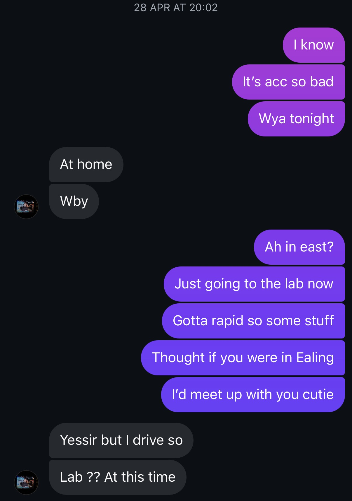
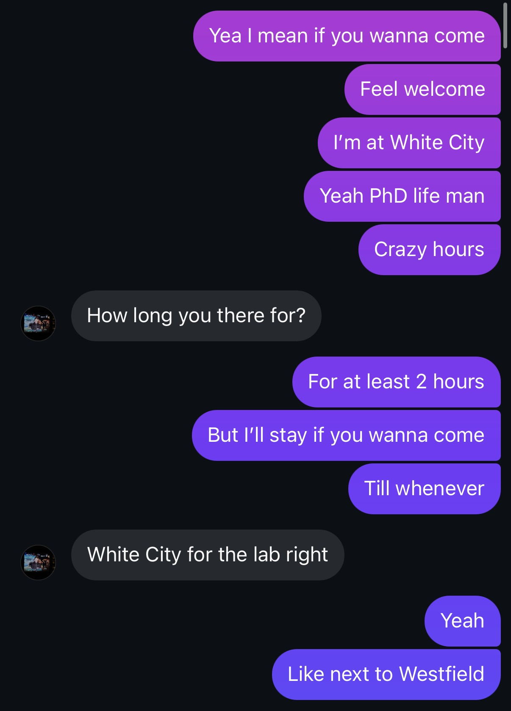
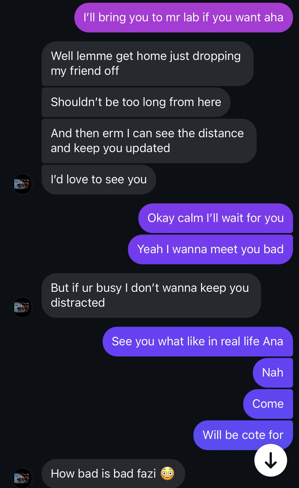
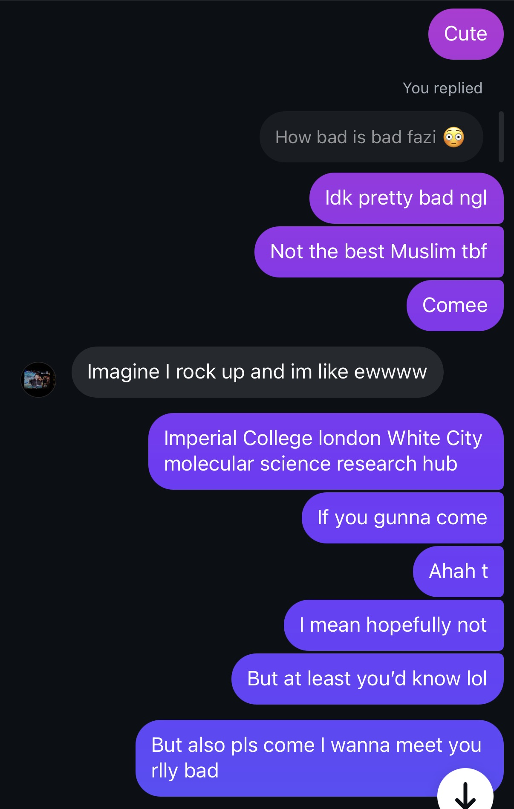
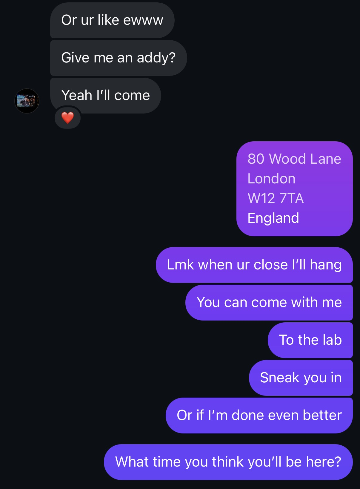
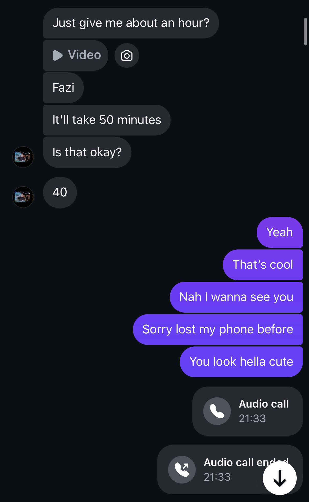
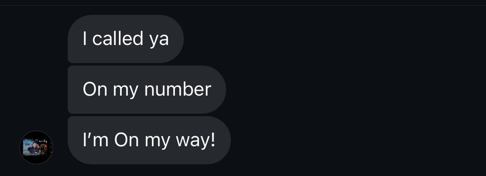
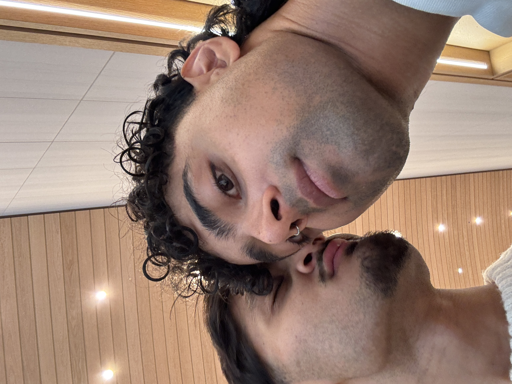

For Sahil ♡
A little notebook of us
Hi my love
Turn the page →
28.04.25: The day I met the boy who opened my eyes to a new world







We didn’t take any pictures that day, but the memory is crystal clear in my mind.
Watching you step out of Jasper and walk towards me, something inside me shifted.
Then in the laser room — your doe eyes locking with mine — and we shared our first kiss. That’s when everything changed.
28.04.25 (continued)

What I noticed first:
The way you look at people like they matter. Like they’re safe with you.
29.04.25: the scream that made me fall even harder in love
No waiting — the very next day we went to watch a horror, and it created one of my favourite memories.
So many moments showed me you’re meant to be my life partner — from holding me when I was scared, to us both reading any kalimas we know loud and proud.
And then finally — a scream that broke all silence in the theatre. The way it made my heart warm and feel at home.

You brought light back into my life and heart.
And on the drive home… you started singing that song and now it’s one of my favourites — “need a cigarette to make me feel better.” Then you got me fries, and we sat and talked about everything. A perfect end to a perfect night.
29.04.25 (continued)
You drove me home, got me fries, and we sat and talked about everything.
A perfect end to a perfect night.
07.05.25: the day we became each other’s comfort
This one was a little tricky, but it brought us closer together at supersonic speed.
I spent the weekend in Surrey holding the hoodie you gave me, while you had work. My iPhone stolen. Sahil left waiting.
No hesitation — you came to comfort me, something I’ll always be so grateful for.

Ending the night in a way neither of us saw coming. Jasper was said farewell, but as one chapter ends, ours was just beginning.
Our first proper cuddle — a closeness that still feels as new as this day.
Holding you as you cried, I knew you were the one I wanted to hold forever.
RIP Jasper… you were so sexy.
07.05.25 (continued)
Some nights don’t just change the day — they change the direction of everything.
Our first Vlog
Press play ♡
Our first Vlog (continued)
Add a little note about why this video means so much to you.